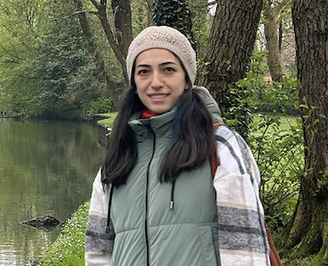

Parvin Amiraslanova

📍 Baku, Azerbaijan ┃ 🗣 +(994)50 7310010 ┃ 📩 amiraslanovaparvin@gmail.com
Summary
Successful Manager in Control Department with more than 10 years of professional experience.
Seeking a career change to a position involving web development for any type of companies,
such as manufacturing, retail, hospitality or food and beverage companies.
I am an organised, efficient and hard working person, and willing to discover and
accept new ideas which can be put into practice effectively.
Despite of not having any coding experience or education, nowadays I am taking a coding boot camp, also working on creating my portfolio.
Education
- Bachelor in International Economic Relations, Azerbaijan State Economic University
- Master in International Economic Relations, Azerbaijan State Economic University
Work Experience
Operations Analyst - Bank VTB (Azerbaijan) OJSC
Dec 2012 - Jul 2016
- Carrying out accounting operations on attracted and placed funds (calculation, payment, withdrawal, increase of interest on deposits, deduction and transfer of taxes on paid interest);
- Control over the correct reflection of credit and deposit operations in the bank's balance sheet;
- Carrying out operations and checking reports on payments made through terminal networks.
Operations Control Leading Specialist - Kapital Bank OJSC
Aug 2016 - Jul 2019
- Monitoring transit accounts of fast money transfer systems and detecting errors and informing relevant structural units;
- Control over mortgage loan payments;
- Payment of subsidies to producers on projects of the Ministry of Agriculture.
Operations Control Manager - Bank VTB (Azerbaijan) OJSC
Aug 2019 - Present
- Participation in the automation of business processes in the field of operations during the introduction of new products;
- Checking daily transactions in the banking system;
- Controlling the payment of commissions on POS terminals provided by the bank to customers.
Skills
- Personal
- Creativity ⭐ ⭐ ⭐ ⭐ ⭐
- Problem Solving ⭐ ⭐ ⭐ ⭐ ⭐
- Critical Thinking ⭐ ⭐ ⭐ ⭐ ⭐
- Teamwork ⭐ ⭐ ⭐ ⭐ ⭐
- Professional
- Microsoft Office ⭐ ⭐ ⭐ ⭐ ⭐
- SQL ⭐ ⭐ ⭐
- Power BI ⭐ ⭐ ⭐
- The Complete Oracle SQL - Udemy (February 2022)
- Business Data Analytics - DataStat (April to July 2022)
My Hobbies
- 🌍 Traveling
- 📚 Reading self-development and novel books
- 🎬 Watching movies and TV series
- 📸 Photography
- 💡 Attending in the intellectual games